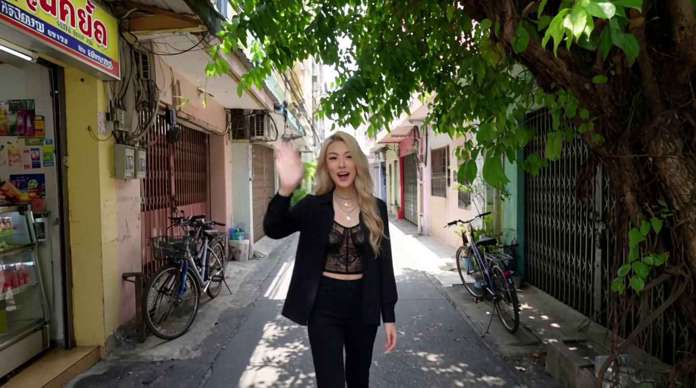

Static snapshot (no embedded video — clips aren't stored in-repo). The full interactive report with both playable clips and the scene-change chart is published live:
Open the full interactive report →
Part 2's final beat ("turn around, walk backward, keep the camera on your own face") rendered
as a generic third-person farewell shot instead — a fast reframe (~0.25-0.3s) that registered as
the single highest ffprobe scene-change score across both clips, despite falling under a
conventional hard-cut threshold. See references/action-beat-defaults.md for the full
analysis, root cause, and fix, and part1-prompt.md / part2-prompt.md for
the prompts that produced these clips.